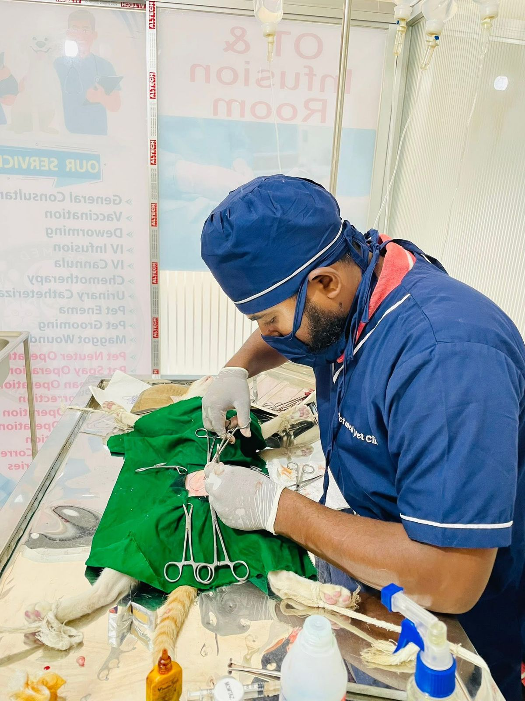
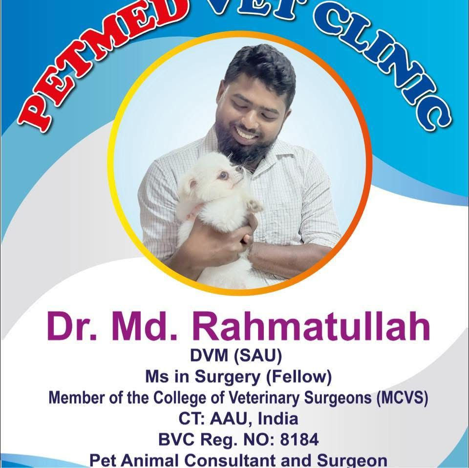
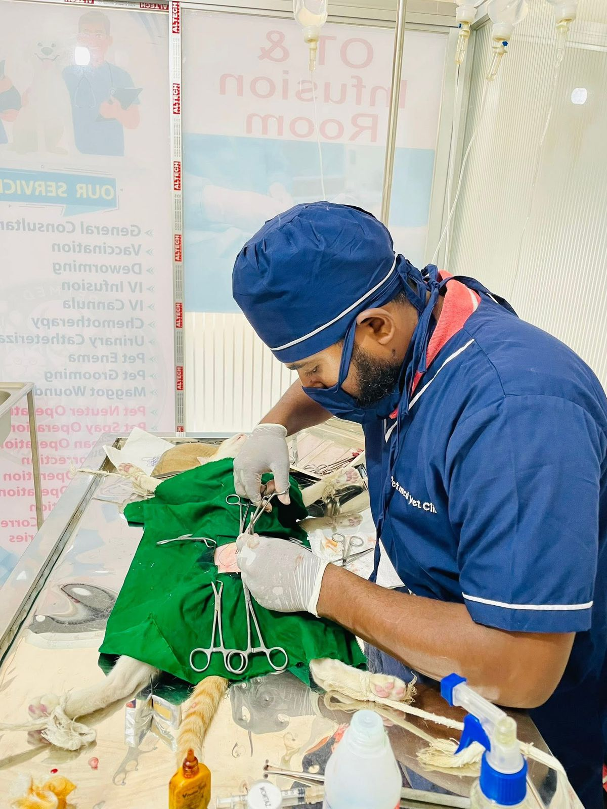
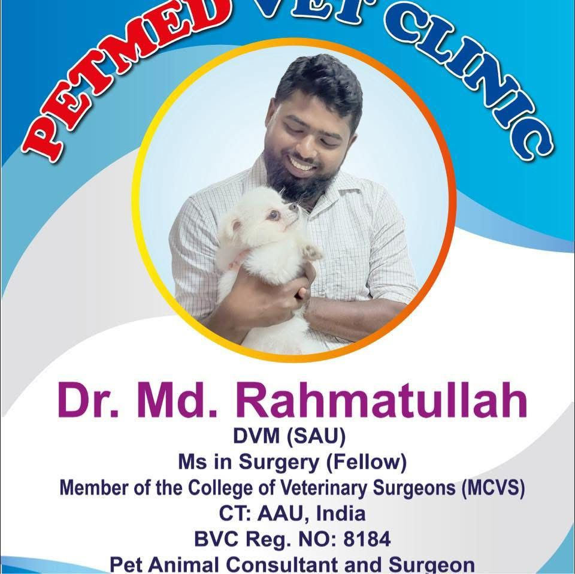

PetMed Vet Clinic is one of the most trusted veterinary centers in Bramondi, Narsingdi. We offer safe, reliable, and affordable medical care for cats, dogs, rabbits, and birds.
DVM (SAU), MS in Surgery (Fellow)
Member of the College of Veterinary Surgeons (MCVS)
BVC Reg. No: 8184
✔ Emergency Calls Accepted